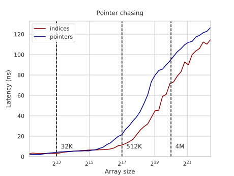
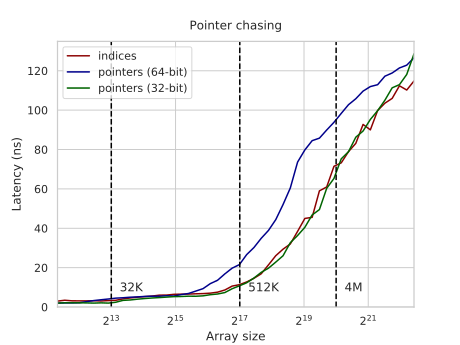
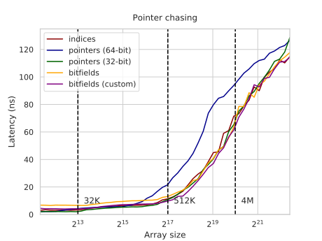

In the pointer chasing benchmark, for simplicity, we didn’t use actual pointers, but integer indices relative to a base address:
for (int i = 0; i < N; i++)
k = q[k];
The memory addressing operator on x86 is fused with the address computation, so the k = q[k] line folds into just a single terse instruction that also does multiplication by 4 and addition under the hood:
mov rax, DWORD PTR q[0+rax*4]
Although fully fused, these additional computations add some delay to memory operations. The latency of an L1 fetch is either 4 or 5 cycles — the latter being the case if we need to perform a complex computation of the address. For this reason, the permutation benchmark measures 3ns or 6 cycles per jump: 4+1 for the read and address computation and another one to move the result to the right register.
#Pointers
We can make our benchmark run slightly faster if we replace “fake pointers” — indices — with actual pointers.
There are some syntactical issues in getting “pointer to pointer to pointer…” constructions to work, so instead we will define a struct that just wraps a pointers to its own type — this is how most pointer chasing works anyway:
struct node { node* ptr; };
Now we randomly fill our array with pointers and chase them instead:
node* k = q + p[N - 1];
for (int i = 0; i < N; i++)
k = k->ptr = q + p[i];
for (int i = 0; i < N; i++)
k = k->ptr;
This code now runs in 2ns / 4 cycles for arrays that fit in the L1 cache. Why not 4+1=5? Because Zen 2 has an interesting feature that allows zero-latency reuse of data accessed just by address, so the “move” here is transparent, resulting in whole two cycles saved.
Unfortunately, there is a problem with it on 64-bit systems as the pointers become twice as large, making the array spill out of cache much sooner compared to using a 32-bit index. The latency-versus-size graph looks like if it was shifted by one power of two to the left — exactly like it should:

This problem is mitigated by switching to the 32-bit mode:

You need to go through some trouble getting 32-bit libs to get this running on a computer made in this century, but this shouldn’t pose other problems unless you need to interoperate with 64-bit software or access more than 4G of RAM
#Bit Fields
The fact that on larger problem sizes the performance is bottlenecked by memory rather than CPU lets us try something even more strange: we can use less than 4 bytes for storing indices. This can be done with bit fields:
struct __attribute__ ((packed)) node { int idx : 24; };
You don’t need to do anything else other than defining a structure for the bit field — the compiler handles the 3-byte integer all by itself:
int k = p[N - 1];
for (int i = 0; i < N; i++) {
k = q[k].idx = p[i];
for (int i = 0; i < N; i++) {
k = q[k].idx;
This code measures at 6.5ns for the L1 cache. There is some room for improvement as the default conversion procedure chosen by the compiler is suboptimal. We could manually load a 4-byte integer and truncate it ourselves (we also need to add one more element to the q array to ensure we own that extra one byte of memory):
k = *((int*) (q + k));
k &= ((1<<24) - 1);
It now runs in 4ns, and produces the following graph:

If you zoom close enough (the graph is an svg), you’ll see that the pointers win on very small arrays, then starting from around the L2-L3 cache boundary our custom bit fields take over, and for very large arrays it doesn’t matter because we never hit cache anyway.
{kind=link}
This isn’t a kind of optimization that can give you a 5x improvement, but it’s still something to try when all the other resources are exhausted.